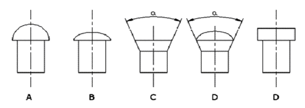
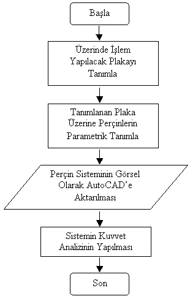
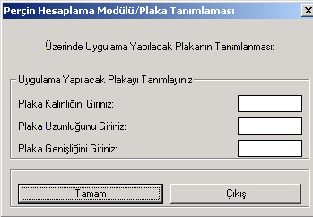
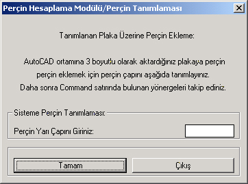
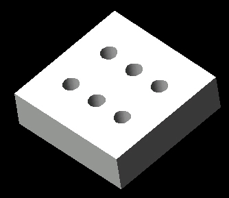
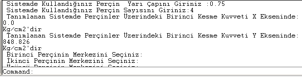
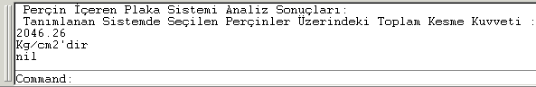

|
Doç. Dr. Mustafa Kemal Külekçi
Murat Demirel
Mersin Üniv. Tarsus T.E.F., Makine Eð. Böl.
Haziran 2005, Mersin
Not: Ýlk defa TurkCADCAM.net Dergisi 1. sayýsýnda (Ocak-Þubat 2006) yer alan bu makale, Kasým 2008'de TurkCADCAM.net Portalý'nda yayýnlanmaya baþlamýþtýr.
Özet
Son yýllarda Mühendislik alanlarýnda Bilgisayar Destekli Tasarým ve Bilgisayar Destekli Üretim (CAD/CAM) uygulamalarý hýzla yaygýnlaþmaktadýr. Bu çalýþmada, AutoLISP programlama dili yardýmýyla perçinle birleþtirilen plaka sistemlerinin kuvvet gerilmelerinin analizi yapýlmýþtýr. Çalýþmada kabul edilmiþ standartlara uygun olan farklý uzunluk, kalýnlýk ve geniþlik gibi deðiþik parametreler içeren plakalar üzerinde bulunan perçinlerin bilgisayar destekli tasarýmý ve kuvvet analizi gerçekleþtirilmiþtir. Bu amaçla hazýrlanan yazýlým percin.lsp ana programý ve 4 adet modül içermektedir. Programda veri giriþi için DCL ve AutoCAD Programý Komut satýrý kullanýlmýþtýr. Bu program kullanýlarak üzerinde çalýþma yapýlacak plakanýn tasarýmý ve çizimi 3 boyutlu olarak AutoCAD ortamýnda gerçekleþtirilmiþtir.
Anahtar Kelimeler: Parametrik Tasarým, Perçin Sistemleri, AutoLISP, CAD Uygulamalarý
1. Giriþ
Günümüz makine sistemlerinde üretime geçilmeden önce bilgisayar ortamýnda tasarlanan sistemlerin test edilip; atanan malzeme boyutsal deðerleri, malzeme cinsi, baðlantý nokta sayýsý gibi deðerlerin bir bütün halinde bilgisayar ortamýnda analiz edilmesi, imalata geçilmeden önce sistemin genel karakteristik yapýsý hakkýnda bilgi vermekte, sistemde sorun olmasý halinde tasarým aþamasýnda müdahale etme, sistemin üretiminde kullanýlacak malzemenin seçiminde daha dikkatli davranma gibi son derece önemli avantajlar saðlamaktadýr. Bu yöntemlerden parametrik tasarým uygulamalarý; toplam modelleme zamanýnýn azaltýlmasý, imalat sýrasýnda beklenmeyen ölçü farklýlýklarýnýn sistemin diðer elemanlarýna yansýtýlmasýnda kolaylýklar saðlamasý, müþterilerin farklý isteklerine kýsa zamanda cevap vermesi gibi avantajlarý nedeniyle birbirine benzeyen ancak geometrik ölçü farklarý veya temelde benzer olup bazý unsurlarý ile farklýlaþan parçalarýn tasarým ve analizinde faydalý bir yöntemdir.
Tasarlanacak bir parçadaki herhangi bir boyut, þekil veya yüzey deðiþikliði o parçanýn çalýþma þeklini olduðu gibi bütün sistemin çalýþma karakteristiðini de etkileyecektir. Ticari CAD sistemlerinin çoðu tek bir parçanýn parametrik modellenmesini ve analizini desteklerken, sistemin bütünü düþünüldüðünde bu programlarýn çoðunun montaj esnasýnda parçalarýn birbirleri ile bir bütün halinde iliþkilerinin belirlenmesinde zayýf kalmaktadýr. Bu çalýþmada kullanýlan CAD programýnýn kendi içerisinde geliþime açýk programlama dilleriyle baðlantýlý olmasýna ve tüm CAD kullanýcýlarý tarafýndan kolayca anlaþýlabilir özellikler taþýmasýna özen gösterilmiþtir. Ürün tasarýmcýlarý ve sistem analistleri deðiþik yer ve disiplinlerden gelen bilgiye ihtiyaç duyulduðundan sadece SolidWorks, AutoCAD, Pro/ENGINEER veya I-deas gibi bir CAD programý tasarýmcýnýn ihtiyaçlarýna cevap vermeyebilir. Bunun için CAD programýný aranan bilgiyi de içinde bulunduran bir bilgi bankasýyla birlikte çalýþtýrmak gerekebilir. Bu gerekçeyle bazý araþtýrmacýlar internete dayalý tasarým sistemlerini teklif etmektedirler.
Türkiye'de de daha önce yapýlmýþ parametrik tasarým uygulamalarý vardýr. Bu çalýþmalarýn bir kýsmýnda AutoLISP ve diðer programlar kullanýlarak flanþlý kavrama, redüktör ve konveyörlerin parametrik tasarýmý gerçekleþtirilmiþtir.
2. Perçin sistemleri ve perçin sistemi tasarýmýnda dikkat edilmesi gereken unsurlar
Perçin; silindirik gövdelerinin bir ucunda deðiþik biçimlerde baþ kýsmý bulunan ve çok kez saç, lama, köþebent gibi gereçleri birbirine birleþtirmek için kullanýlan birleþtirme elemanlarýdýr. Perçinler ile yapýlan birleþtirmeler tekrar sökülmesi istenmeyen, zor sökülen birleþtirmelerdir. Perçinle birleþtirme iþlemi zaman aldýðýndan dolayý ve kaynak teknolojisinin önemli geliþmeler kaydetmesiyle son yýllarda önemini kaybetmeye baþlasa da perçinle birleþtirmenin ihtiyaç duyulduðu sistemler oldukça fazladýr (Çelik yapýlar, tren vagonlarý, kazanlar, su tanklarý, gemiler...). Perçinler çelik, bakýr, alüminyum ve alaþýmlarý, pirinç ve benzeri gereçlerden yapýlýr. Perçinin gereci, birleþtirilecek parçalarýn gereçlerine ait özelliðe yakýn özellikte olmalýdýr. Perçinler ihtiyaç duyulan imal tipine ve kullaným alanlarýna göre çok farklý þekilde günümüz endüstrisinde kullanýlmaktadýr. (Þekil-1)

Þekil 1
Sýk Kullanýlan Perçinli Baðlantý Çeþitleri
Perçin içeren sistemleri tasarlarken temel dikkat edilmesi gereken bazý temel kurallar vardýr. Tasarýmcý bilgisayar ortamýnda tasarým aþamasýnda bunlara dikkat etmelidir. Bu kurallarýn baþlýcalarý;
- Perçinle birleþtirme yapýlan sistemlerde perçinler birbirlerine çok yakýn veya çok uzak olarak tasarlanmamalýdýr.
- Tanýmlanan sistemde plaka kenarý ile perçin merkezi arasý, perçin çapýnýn bir buçuk katý kadar olmalýdýr.
- Sistemde bulunan perçinler arasý mesafe perçin çaplarýnýn üç katýndan küçük olmamalýdýr. (Kazan sistemlerinde bu mesafe daha az olabilir.)
- Sistemde perçinler arasý en fazla mesafe perçin çapýnýn 16 katý olmalýdýr.
3. Geliþtirilen program
Geliþtirilen program, AutoLISP programlama dili altýnda çalýþabilen API fonksiyonlarý kullanýlarak tanýmlanmýþtýr. AutoCAD ortamýnda AME (AutoCAD Modeling Extension) kullanýlarak çeþitli uygulamalar yapabilecek iki programlama dili mevcuttur. Bunlar AutoLISP ve C programlama dilleridir. AutoLISP ile bir çok AME komutu kullanýlabilmektedir. AME, ismi API (Application Programming Interface) olan ve program yazýmýnda kullanýlan fonksiyonlarý içeren bir kütüphaneye sahiptir. API fonksiyonlarý AutoLISP ve C programlama dillerinde çaðýrýlabilir ve program yazýmýnda kullanýlabilir.

Þekil 2
Hazýrlanan Programýn Akýþ Þemasý
Hazýrlanan program AutoLISP programlama dili kullanýlarak oluþturulmuþtur. Programýn akýþ þemasý (algoritmasý) Þekil 2 de verilmiþtir. Programýn çalýþabilmesi için sistemde AutoCAD Release 10 veya üstü bir program sürümünün olmasý gerekmektedir. Ayrýca AutoCAD programýna program modüllerinin bulunduðu klasör; program açýlýþýnda program tarafýndan tanýnacak þekilde kullanýcý tarafýndan program kullanýlmadan önce gerekli tanýmlamalar yapýlmalýdýr. Program modülleri ikiþer program dosyasýndan oluþur "*.lsp" ve "*.dcl" dosyalarý olarak tanýmlanan bu dosyalar bir bütün halinde modüllerin çalýþmasýný saðlar. "*.lsp" uzantýlý dosyalarda programýn temel çalýþma kodlarý ve program akýþý saðlanýrken "*.dcl" uzantýlý dosyalarda program girdisi atamaya yarayan dialog pencereleri tanýmlanmýþtýr. Bu pencerelerin tüm tasarým kodlarý "*.dcl" uzantýlý dosyalarda bulunurlar.
Programýn kullanýmý ve ara yüzü

Þekil 3
Program DCL Girdi Arayüzü
Program alt modüllerden oluþmakta ve modüllere bilgi giriþi DCL (Dialog Control Language) ile hazýrlanan diyalog kutularý yardýmý ile ve AutoCAD programý içerisinde bulunan "Command" satýrý aracýlýðýyla yapýlmaktadýr.
AutoCAD programý çalýþtýrýldýktan sonra açýlan standart bir boþ çizim sayfasýna "plaka.lsp" isimli modül çaðýrýlarak (Þekil-3) üzerinde iþlem yapýlacak plaka tanýmlanmalýdýr. Bu DCL dosya üzerinde iþlem yapýlacak plakanýn kalýnlýðý, uzunluðu ve geniþliði atandýktan sonra "Tamam" butonuna basýldýðýnda iþlem yapýlmak istenen plaka üç boyutlu olarak sisteme atanýr ve çizim dosyasýnda üç boyutlu olarak kullanýcýnýn karþýsýna gelir. Kullanýcý bu aþamadan sonra sistemde analiz yapýlacak perçinleri eklemek için perçin modülünü AutoCAD ortamýna çaðýrmalýdýr (Þekil-4).

Þekil 4
Sisteme Perçin Tanýmlanmasý
Sisteme tanýmlanan plaka üzerine perçinlerin atanmasý için "percin.lsp" isimli modül çalýþtýrýlýr ve sisteme eklemek istenen perçinin yarýçapý girilir. Yarýçap deðeri girildikten sonra "Command" satýrýnda istenen plakanýn içinde ve dýþýnda bir nokta tanýmlamasý yapýlýr. Bu tanýmlamanýn ardýndan plaka üzerine perçin atamasý yapýlmýþ olur. Sisteme eklenecek her perçin için ayný yol takip edilmelidir. Sisteme altý adet perçin eklendikten sonraki örnek görünüm Þekil 5'de verilmiþtir.

Þekil 5
3 Boyutlu Plaka Görünümü
Sisteme perçinlerin atanmasý ve sistem öðelerinin tamamlanmasý ile sistemin kuvvet analiziz yapýlabilir. Bunun için "ilkkesme.lsp" isimli modül AutoCAD ortamýna çaðýrýlýr ve sisteme yüklenmek istenen kuvvet "Command" satýrýndan programa girilir. Kuvvet deðerinin girilmesi ile program her bir perçinde kuvvet tarafýndan oluþturulan birincil kesme kuvveti deðerini hesaplar ve kg/cm2 cinsinden kullanýcýya verir. Sistemde oluþan ikincil kesme gerilmesi ve sistemde bulunan kuvvet tarafýndan oluþan momentin yarattýðý kesme gerilmeleri ise hangi perçin için hesaplanmak isteniyorsa o perçin için sýrayla seçilmesi ile program tarafýndan kullanýcýya "Command" satýrýnda verilir.

Þekil 6: Command Satýrýnda Program Ýlerleyiþi

Þekil 7:
Program Analiz Sonuçlarýnýn Kullanýcýya Aktarýlmasý
Programda kullanýlan kodlar
Program akýþý içerisinde DCL ekranlarý ve AutoCAD "Command" satýrýndan programa girdi saðlanmak için yararlanýlmýþtýr. DCL ekranlarý LISP dosyalarýndan farklý olarak oluþturulan DCL dosyalarý içerisinde tanýmlanmýþtýr. Ve her girdi için deðiþken bu kýsýmda atanmýþtýr. Programýn deðiþik evrelerinde kullanýcýdan "Command" satýrý aracýlýðýyle istenen girdiler ise direkt olarak iþlem yapan "*.lisp" dosyasý içine atanmaktadýr.
Bazý önemli kodlar ve açýklamalarý
(setq dcl_id (load_dialog "plaka.dcl")) : Programda tanýmlanan plaka girdilerinin girildiði DCL dosya içerisindeki verilerin programa yüklenmesi için DCL dosyanýn lisp dosyasýna tanýtýlmasý için gerekli komut satýrý.
(setq orta (getvar "VIEWCTR")) : Plakanýn çiziminin yapýlacaðý ekranýn merkez koordinatlarýný alarak bunu ileride kullanýlmak üzere bir deðiþkene atanmasý iþlemi.
(command "box" orta "L" genis1 uzun1 kalin1 ) : DCL dosya tarafýndan girilen plaka bilgilerinin LISP ortamýnda tekrar deðiþkenlere atandýktan sonra plakanýn çiziminin yapýlacaðý prizmatik þekil çizimi için gerekli kod satýrý.
(command "ucs" "origin" yer) : Plaka üzerinde perçinleri tanýmlamak için perçinin tanýmlanacaðý yere UCS taþýnýr.
(command "cylinder" "0,0,0" r h) : "0,0,0" noktasý merkez olacak þekilde "r" yarýçapýnda ve "h" yüksekliðinde bir silindir çizer.
(command "subtract" nesne "" "last" "") : Son çizilen nesneyi (silindiri) "nesne" deðiþkenine atanmýþ olan nesneden çýkarýr.
(setq nh(* -1 h)) : "h" deðerinin çarpmaya göre tersini alýr ve "nh" deðiþkenine atanýr.
(command "cylinder" "0,0,0" r nh) : "0,0,0" noktasý merkez olacak þekilde "r" yarýçapýnda ve "nh" yüksekliðinde bir silindir çizer. Fakat bu yeni silindir diðer silindirin tersi yönünde uzanýr.
(command "subtract" nesne "" "last" "") : Son çizilen nesneyi yani silindiri "nesne" deðiþkenine atanmýþ olan nesneden çýkarýr. Ve perçini sisteme tanýmlar.
Programda kullanýlan tüm komutlarýn açýklamalarý ve örnek uygulamalarý AutoCAD programýnýn yardým bölümünde bulunmaktadýr.
3.4 Plakada oluþan gerilmelerin azaltýlmasýyla ilgili öneriler
Çalýþma esnasýnda incelenen plaklarda oluþan kuvvet deðerlerinin azaltýlmasýyla ilgili olarak perçin çaplarýnýn deðiþtirilmesi ve perçinlerin plakaya olan uzaklýðýnýn deðiþtirtmesi önerilmektedir. Ayrýca kuvvetin uygulama noktasýna kuvvet doðrultusu deðiþtirilmeden taþýnmasý, uygulamada perçinler üzerindeki gerilmelerin azaltýlmasýný saðlamaktadýr.
4. Sonuç
Bilgisayar Destekli Tasarým, tasarýmcýya; tasarýmlarýn kýsa sürede tamamlanmasý, hatalarýn en aza indirilmesi, tasarým kalitesinin artýrýlmasý gibi önemli üstünlükler saðlamaktadýr. Perçin sistemlerinin tasarým parametreleri dikkate alýndýðýnda, plaka üzerinde en fazla gerilme kuvvetine maruz kalan perçinler; kuvvetin uygulandýðý yön ile kuvvetin uygulanmasý nedeniyle oluþan moment kesme gerilmesinin çakýþtýðý yani ayný yönde olduðu perçinlerdir. Bu kesme gerilmesinin azaltýlmasýna dair çeþitli öneriler belirtilmiþtir. Boyutlandýrma, mukavemet hesaplarý gibi konularda geliþtirilen program eðitimi destekleyici materyal olarak kullanýlabilir. Benzer perçinli birleþtirmelerde parametre bazýnda tasarým yapýlmasýna olanak saðlanmýþtýr. Program benzer diðer makine elemanlarý için uygulanabilir.
5. Kaynaklar
- Werner, A. ve Diðerleri, "Design and Manufacture of Anatomical Hip Joint Endoprostheses Using CAD/CAM Systems", Journal of Material Processing Technology, 76 (1998)
- Kondo K., PIGMOD, " Parametric and Interactive Geometric Modeller for Mechanical Design", Computer Aided Parametric Design, 23 (1991)
- Halkaci, H.S ve Yiðit, O., "Parametrik Tasarým ve Solidworks CAD programý ile Bir Uygulama" Machinery MakineTek, 89 (2005)
- ÖZKAYA, SAÝT "KINKFOLD - an AutoLISP Program For Construction of Geological Cross-Sections Using Borehole Image Data" Computers & Geosciences,
Sayý 28, Issue 3, Nisan 2002, Sayfalar 409-420
- Baþak, H. ve Gülesin M. "Prizmatik Parçalar Ýçin Unsur Tabanlý Parametrik Tasarým Programý" Teknoloji, 4 (2000)
- BAÞAK Hüdayim - AutoLISP - Pusula Yayýncýlýk, Eylül 2002
- ÞEKERCÝOÐLU Ahmet - Adým Adým AutoCAD - Bilim Teknik Yayýnevi
- ÇIKIÞ Ender - AutoLISP - Beta Yayýnlarý
- YALDIZ Süleyman - AutoCAD 2002 - Ýnci Ofset, Aralýk 2002
|